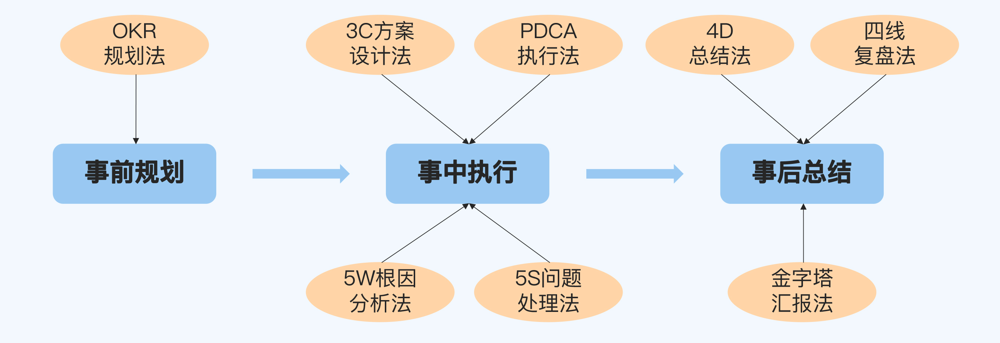

21 | 导学：你应该掌握哪些做事方法？
你好，我是华仔。
从今天开始，我们进入到课程的第五部分，做事方法。
你在工作中肯定听到过这样的评价，“这个人做事很靠谱”或者“这个人做事很厉害”。
但是你有没有想过：同一个部门的人，级别一样，岗位职责一样，参与的项目也差不多，为什么你会觉得其中某些人做事就是比大部分人更靠谱、更厉害呢？
你可能会认为，这是因为他们态度更积极，更加会表现。
但是如果你带过团队就会知道，做事的态度和做事的能力不是等价的。
尤其是在部门绩效拉通和晋升预审这些场合，如果你向其他部门的负责人介绍的时候，说自己团队的某个成员“做事积极主动，很认真，很拼”，那么多半会被“怼”得很惨。
比如有人可能会说：“晚上9点下班就算拼了？我们团队的xxx做项目的时候都是11点才准备下班。”
那么，高级别的管理者是怎么判断你的做事能力强不强的呢？
我自己带过很多人，也经常跟其他的P8、P9和P10这个级别的管理者交流学习。我发现，有三条判断标准是能够达成共识的。
做事能力的判断标准
标准一：具备闭环思维
闭环思维是最基本的能力要素，也就是说，做事的时候不能只是完成任务了事，而是要从端到端的角度去思考和落地。
无论什么事情，端到端的过程都可以分为事前规划、事中执行和事后总结三个阶段，但是大部分人都只关注“事中执行”的阶段，而对事前和事后两个阶段并不在意。
第一个原因是，这两个阶段不是自己负责的。
比如对技术人员来说，需求是产品经理提的，需求上线后也是产品经理来做业务分析，这些都不是你的本职工作。
第二个原因是，这两个阶段的任务并不一定是强制要求的。
比如有些团队的Team Leader是问题驱动型的，要么完成项目任务，要么处理问题，而不会主动去规划什么东西，因为规划有时候是一件很费脑筋的事情。
也有的人完成任务就万事大吉，接着去做下一个任务，而不会对当前任务进行总结，不会去想哪些做得好可以传承，做得不好可以改进。
但是如果你有了闭环思维，那么就算不是你自己负责的事情，或者不是强制要求的事情，你也会想方设法地去了解更多信息，思考下次怎么做得更好，这就是晋升原则中的主动原则和成长原则所讲的内容。
以开发人员为例，虽然你只负责开发环节，但是如果按照闭环思维来做事，在做之前你除了理解需求之外，还应该去了解“为什么做这个需求”“需求的价值是什么”（事前规划），需求上线之后，你还应该去了解“需求上线后的结果怎么样？”“具体的业务数据是多少？”“我通过做这件事情收获了什么”（事后总结）等等。
而如果你本来就是端到端地负责某件事情的话，那就更加需要学会事后复盘、给领导汇报等技巧了，而不是做完事情之后被动地等着别人来问结果。
标准二：有方法论指导
有了闭环思维，做事就已经比较靠谱了。但是事情能不能做得漂亮，光有闭环思维是不够的，还需要看你的做事有没有方法论，也就是说，你做事的时候不只是靠经验教训的历史积累，还有一套系统的流程或者模板。
方法论的第一个优势在于，无论遇到什么情况，你都能取得比较好的结果，能够保证交付质量的下限。否则如果只凭经验，那么下次情况稍微发生一些变化，你就不适应了。
方法论的第二个优势在于，你的行为背后是有一套逻辑支撑的，而不是拍脑袋随便拍出来的，这样会更有说服力。
比如你说“我觉得XX业务功能可以改一改”，但是又给不出充分的理由，那么别人很可能认为你是在瞎指挥；但如果你采用了AARRR漏斗模型来分析业务数据，在这个模型的基础上提出改进建议，那么别人接受的可能性就大多了。
标准三：能拿到好的结果
有了方法论是不是就一定很厉害呢？其实还不一定。
首先，你可能虽然有方法论，但其实你的方法论是错误的。
其次，你之前形成的方法论可能很厉害，但并不适合当前公司或者业务。
所以最后，判断你的方法论好不好，其实还是要看最后的结果好不好，给公司带来了多少价值，这也是晋升原则中的价值原则讲的内容。
虽然我们说是否能够拿到好的结果会有运气的成分，但剔除掉运气的因素，方法论的影响也很大。这也是很多从大公司出来的高P人员拿着原来的方法论到了中小公司或者创业公司，生搬硬套导致水土不服的原因。
做事方法
经过多年的实践检验和筛选，我逐步形成了一套系统的做事方法论，它按照闭环思维的三个阶段展开，整体结构如下：

事前规划
- OKR规划法：英特尔提出、谷歌发扬光大的方法，通过合理地设定目标和分解关键成果来弥补KPI的缺陷，用于制定工作规划。OKR规划不同于传统KPI规划，更加注重聚焦和逻辑，你可以理解为“OKR方法教你如何制定牛逼的KPI”。
事中执行
- 3C方案设计法：我原创的方法，通过制定多个备选方案来系统地分析事情相关的方方面面，避免思维狭隘，用于设计合理的落地方案。
- PDCA执行法：美国人提出、日本人发扬光大的方法，通过四个环节的循环来把控执行过程，保证具体事项高效高质地落地，用于推进事情的执行。
- 5W根因分析法：丰田集团提出的方法，又叫“丰田五问法”，通过五个为什么来深挖问题本质，用于分析根本原因。
- 5S问题处理法：我原创的方法，通过五个步骤来解决问题，化“危”为“机”，用于系统地处理问题。
事后总结
- 4D总结法：我原创的方法，通过四个维度来整理做事的收获，能够帮助你在完成任务后进一步全方位地提升自己的能力，用于事后总结。
- 金字塔汇报法：我参考麦肯锡的金字塔原理所提出的方法，通过遵循四个原则来展示工作成果，从而更容易获得高级别管理人员的认可，用于事后汇报。
- 四线复盘法：我原创的方法，通过四个角度来复盘重大问题，达到公平公正的处理效果，避免背锅和甩锅，用于重大问题发生后的复盘改进。
小结
以上这些做事方法是我个人经验的归纳总结，希望能给你一些启发。当你不熟悉的时候，可以先照搬这些方法；而当你积累了一定的经验后，就不用再局限于我讲的内容了，可以自己去尝试和总结一些新的方法，不过一定要记得按照我在之前介绍的三条标准来检验。
现在，我们总结一下这一讲的重点内容：
- 关于做事能力，有三条业界达成共识的判断标准，分别是闭环思维、方法论和结果。
- 我总结的做事方法分为事前规划、事中执行和事后总结三个阶段，包括OKR规划法、3C方案设计法、PDCA执行法、5W根因分析法、5S问题处理法、4D总结法、金字塔汇报法和四线复盘法等8种方法。
思考题
这就是今天的全部内容，留一道课后思考题给你吧。你在工作中用过这一讲提到的做事方法吗，效果怎么样？或者你自己有没有比较有特色的做事方法呢？
欢迎你把答案写到留言区，和我一起讨论。相信经过深度思考的回答，也会让你对知识的理解更加深刻。